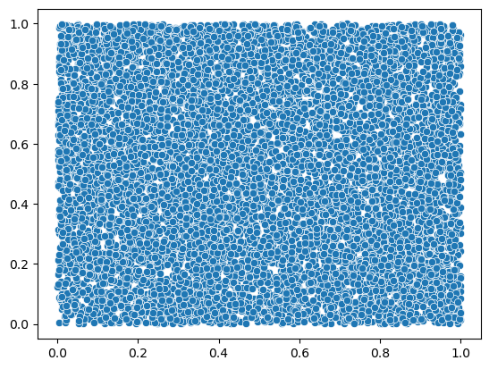
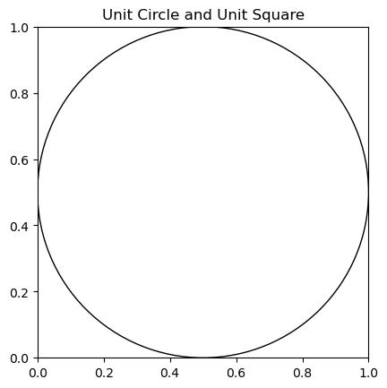

import numpy
import seabornn = 10000
xy = numpy.random.random((n,2))xy[0:10]array([[0.54793542, 0.47487312],
[0.37175508, 0.27585956],
[0.67455229, 0.83556616],
[0.47284257, 0.06297568],
[0.35279046, 0.0692831 ],
[0.32496125, 0.53579636],
[0.09934598, 0.04802856],
[0.97355217, 0.85862869],
[0.39703994, 0.00762409],
[0.73813219, 0.42080489]])seaborn.scatterplot(x=xy[:,0], y=xy[:,1])/Users/srey/mambaforge/envs/385f23/lib/python3.10/site-packages/seaborn/_oldcore.py:1498: FutureWarning: is_categorical_dtype is deprecated and will be removed in a future version. Use isinstance(dtype, CategoricalDtype) instead
if pd.api.types.is_categorical_dtype(vector):
/Users/srey/mambaforge/envs/385f23/lib/python3.10/site-packages/seaborn/_oldcore.py:1498: FutureWarning: is_categorical_dtype is deprecated and will be removed in a future version. Use isinstance(dtype, CategoricalDtype) instead
if pd.api.types.is_categorical_dtype(vector):<Axes: >
Area of a circle: \[ A_c = \pi r*2 \]
Area of a square: \[ l*l = A_s\]
import matplotlib.pyplot as pltfigure, axes = plt.subplots()
Drawing_uncolored_circle = plt.Circle( (0.5, 0.5 ),
0.5 ,
fill = False )
axes.set_aspect( 1 )
axes.add_artist( Drawing_uncolored_circle )
plt.title( 'Unit Circle and Unit Square' )
plt.show()
ds = xy -.5dsarray([[ 0.04793542, -0.02512688],
[-0.12824492, -0.22414044],
[ 0.17455229, 0.33556616],
...,
[ 0.20245124, 0.20094301],
[ 0.45447726, 0.24013232],
[ 0.20171588, 0.40397786]])ds = (ds**2).sum(axis=1)**(1/2)dsarray([0.05412175, 0.25823574, 0.37825011, ..., 0.2852448 , 0.51401664,
0.45153893])\[A_c / A_s = \frac{\pi r^2}{1}\]
\[\frac{A_c / A_s}{r^2} = \pi\]
((ds<.5).sum()/n) / (.5*.5)3.1492